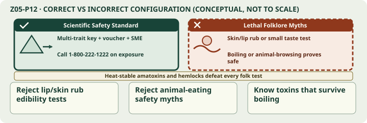

Z05-P12 · Wild foods and poisonous lookalikes · New manuscript
Rejecting Universal Edibility Test Folklore and Cooking Myths
Explicitly dismantle dangerous survival folklore—skin/lip rub tests, animal-browsing myths, silver-spoon tests, and universal boiling myths.
When it applies · All wild plant and fungal safety education.
Equipment · CDC MMWR toxicology reports, Poison Control guidance.

Actions
- Reject the so-called universal edibility test (rubbing unknown plants on wrists, lips, or tongue in timed steps) completely: tiny doses of water hemlock or amatoxin mushrooms cause delayed fatal organ failure without immediate lip burn.[B07, B11, B24]
- Reject wildlife-browsing myths ("if squirrels or deer eat it, humans can"), silver-spoon tarnish tests, cap-peeling rules, and garlic-cooking myths—animals tolerate toxins lethal to humans, and amanitin/gyromitrin/alkaloids fail every folk cue.[B07, B24]
- Reject the myth that boiling destroys all plant and mushroom toxins: amatoxins in lethal Amanita and Galerina species survive prolonged boiling, drying, and freezing completely intact.[B06, B07, B24]
Failure recognition · Trusting a lip-rub test or boiling an unknown woodland mushroom directly causes fatal liver failure or neurotoxic seizures.[B06, B07, B11, B24]
Verify · Zero folklore tests appear in field decision-making, and unrecognized specimens remain strictly untouched.[B24]
Stop or change course · Stop immediately if anyone proposes a taste test, skin-rub test, or folk-cooking shortcut on an unknown plant or mushroom.[B24]
Evidence and editorial notes
- B06 · CDC MMWR · Notes from the Field: Severe Mushroom Poisoning — Minnesota 2018 (MMWR 68(21))
- Section: Minnesota severe mushroom poisoning outbreak (MMWR 68:21) · Conditions: Wild mushroom foraging and lookalike misidentification in Minnesota
Support: Foragers in Minnesota suffered severe hepatotoxic poisoning after mistaking lethal amatoxin-containing mushrooms for familiar edible species.
Limitations: Delayed gastrointestinal onset (6-24+ hours) followed by a false recovery phase precedes liver failure; treat any wild mushroom ingestion with symptoms as a medical emergency. · Conflicting evidence: None noted.
Editorial note: Critical Minnesota fungal hazard evidence. · Specialist reviewer: Medical toxicologist and mycologist
Primary source · checked 2026-11-25 - B07 · CDC MMWR · Amanita phalloides Mushroom Poisonings — 2026 Outbreak Report (MMWR 75(20))
- Section: Amanita phalloides outbreak and amatoxin lethality (MMWR 75:20) · Conditions: Recognizing lethal Amanita lookalike risk and cooking myths
Support: Amatoxins in death cap and destroying angel species survive boiling, freezing, and drying; misidentification causes acute liver failure and death.
Limitations: Never rely on folklore tests, boiling, peeling, or visual similarity to safe regional species. · Conflicting evidence: None noted.
Editorial note: Prohibits boiling/peeling mushroom myths. · Specialist reviewer: Medical toxicologist and mycologist
Primary source · checked 2026-11-25 - B11 · USDA ARS · Poisonous Plant Research Laboratory Reference (Current web edition)
- Section: Water hemlock (Cicuta) and poison hemlock (Conium) lethality · Conditions: Wetlands, ditches, and disturbed ground with Apiaceae (carrot-family) umbels
Support: Water hemlock (Cicuta maculata) and poison hemlock (Conium maculatum) contain potent neurotoxins causing rapid seizures, respiratory arrest, and death even from small bites.
Limitations: Never forage wild carrot-family roots or foliage without independent qualified botanical verification; reject any wet-ground umbel outright. · Conflicting evidence: None noted.
Editorial note: Mandatory Z05 lethal Apiaceae stop rule. · Specialist reviewer: Botanist and medical toxicologist
Primary source · checked 2026-11-25 - B24 · CDC MMWR · Notes from the Field: Severe Mushroom Poisoning — Minnesota 2018 (MMWR 68(21))
- Section: Rejection of folklore edibility tests and AI-only visual clearance · Conditions: All wild plant, berry, root, and fungal screening
Support: Universal skin/lip rub tests, silver-spoon tests, animal-browsing observations, single photos, and generated illustrations never establish edibility.
Limitations: If any diagnostic feature, site-contamination history, or expert review is missing, consumption remains strictly WITHHELD. · Conflicting evidence: None noted.
Editorial note: Enforces Z05 fail-closed edibility rule. · Specialist reviewer: Botanist, mycologist, and clinical toxicologist
Primary source · checked 2026-11-25
Source lineage · New manuscript (Z05 P19-C safety gate) · Classification · New manuscript.